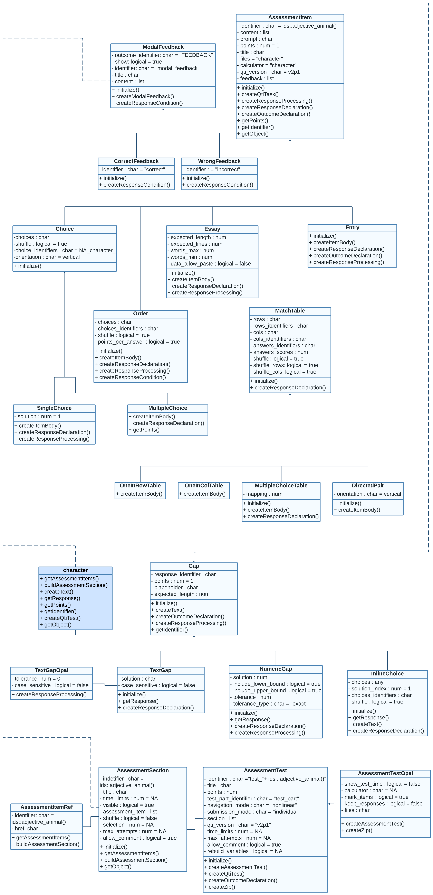

This section is still under construction and only relevant if you want to create exercises without relying on Rmd files. Under the hood, qti uses S4 OOP. This means that you can create all exercise types as objects, which gives you more flexibility and is much faster. If you are happy with Rmd, there is nothing wrong using it. If you want to go to the next level, consider creating exercise objects directly.
First, check out the overview of our classes:

qti class model consists of classes that represent types
of tasks ([?SingleChoice], [MultipleChoice],
Essay, Entry, Order,
DirectedPair, MultipleChoiceTable,
OneInRowTable, OneInColTable), elements of
interactive content of tasks (ModalFeedback,
CorrectFeedback, WrongFeedback,
TextGap, NumericGap,
InlineChoice, TextGapOpal), tests and their
sections (AssessmentSection, AssessmentTest,
AssessmentTestOpal).
How to create task objects
There are two ways to create task objects:
- a call to
new - using constructor functions (will be delivered soon)
Examples of creating task objects
library(qti)
# simple examples
sc0 <- new("SingleChoice",
identifier = "sc0",
choices = c("answer1", "answer2", "answer3"))
ord0 <- new("Order",
identifier = "ord0",
choices = c("item1", "item2", "item3"))
# more advance example
sc1 <- new("SingleChoice",
choices = c("option 1", "option 2", "option 3", "option 4"),
title = "Single Choice Task",
content = list("Pick up the right option"),
points = 2,
identifier = "sc_v0",
feedback = c(new("WrongFeedback", title = "Error",
content = list("You made a mistake")),
new("CorrectFeedback", title = "Success",
content = list("Well done")),
new("ModalFeedback", title = "Common information",
content = list("Model answer of some details"))))To see full list of slots call ?SingleChoice
Examples of creating section object
# simple example
section0 <- new("AssessmentSection",
identifier = "sect0",
assessment_item = list(ord0))
# more advance example
section1 <- new("AssessmentSection",
identifier = "sect1",
title = "First Section",
time_limits = 20,
visible = FALSE,
assessment_item = list(sc0, sc1),
max_attempts = 2,
allow_comment = TRUE)Examples of creating test object
# simple example with a call to `new`
test0 <- new("AssessmentTest",
identifier = "test",
section= list(section0, section1))
# simple example using constructor `test()`
test0 <- test(c(section0, section1), "test")
# more advance example with a call to `new`
test1 <- new("AssessmentTest",
identifier = "test",
title = "Test",
navigation_mode = "linear",
section= list(section0, section1),
time_limits = 60,
max_attempts = 1,
allow_comment = TRUE)
# more advance example using constructor `test()`
test1 <- test(content = c(section0, section1),
identifier = "test",
title = "Test",
navigation_mode = "linear",
time_limits = 60,
max_attempts = 1,
allow_comment = TRUE)